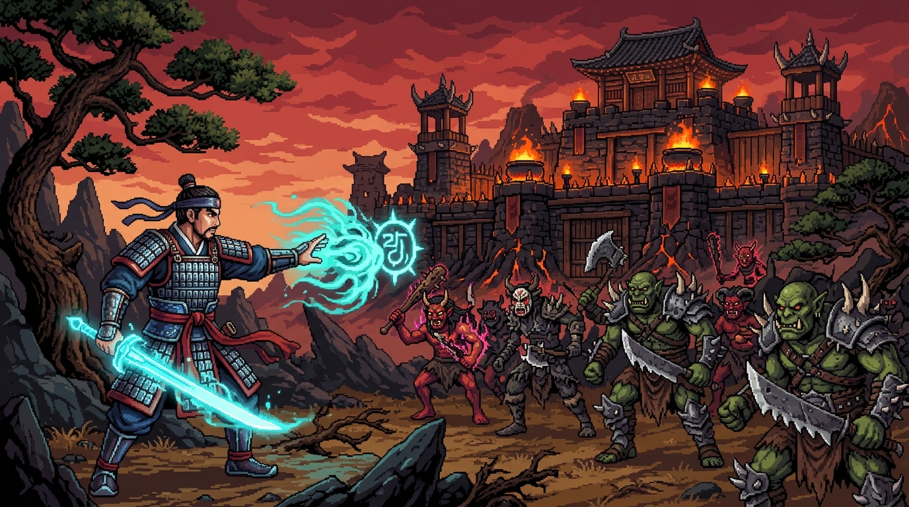
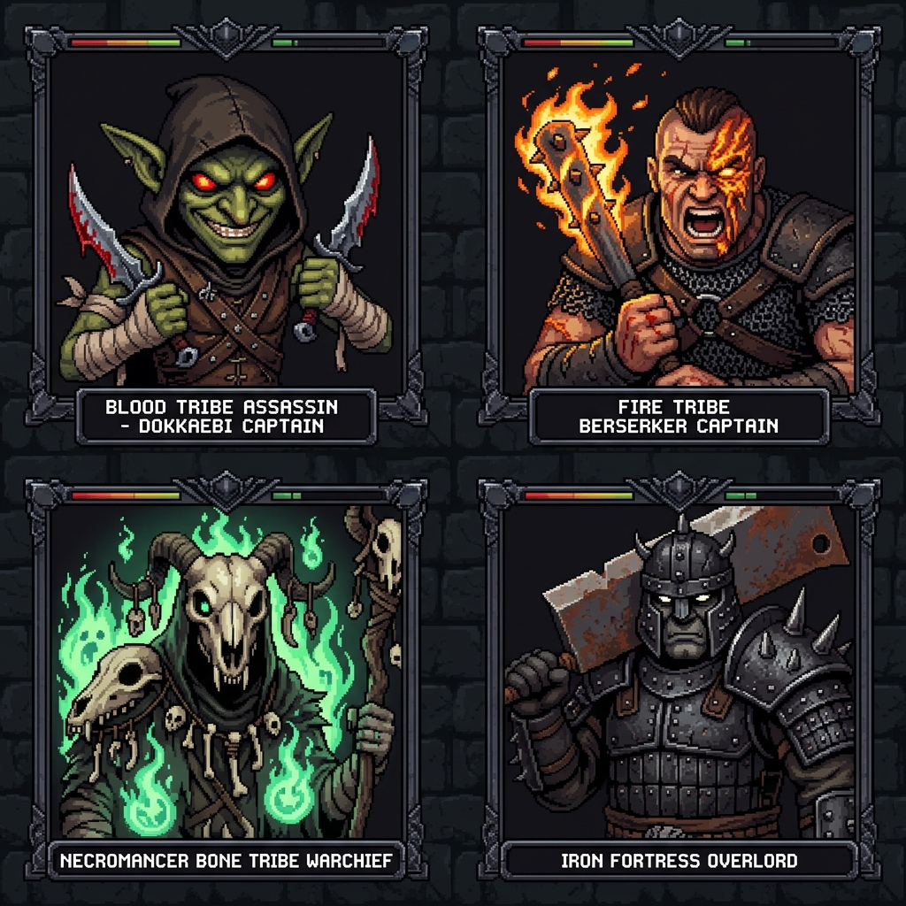
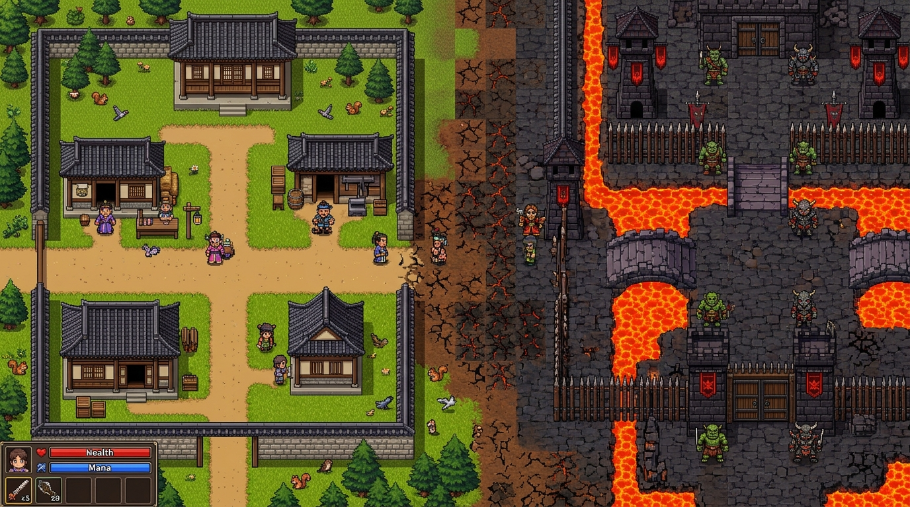

국내성 남문 & 주막 (안전)
도살자 아크골 (Lv.5)
혈마족 · 암살자
220 / 220
《미들 어스: 섀도우 오브 모르도르 & 섀도우 오브 워》의 핵심인 절차적 군단 계급·기억·복수·지배 메커니즘(Nemesis System)을 90년대 한국 클래식 2D 도트 MMORPG 《바람의 나라》의 국내성·주막·흉가·헬파이어 감성으로 재탄생시킨 2D 픽셀 아트 RPG입니다.

8명의 백부장(Captains), 3명의 전투대장(Warchiefs), 그리고 성채를 지배하는 1명의 대군주(Overlord)가 실시간으로 살아 움직입니다. 5개 부족(혈마족·화염깨비족·해골망령족·야수사냥족·기계장인족)과 5개 전투 병과가 고유한 외형과 대사를 생성합니다.
전투 중 사망하면 단순한 게임오버가 아니라, 당신의 숨통을 끊은 이름 없는 도깨비 졸개(심지어 분노한 다람쥐까지!)가 고유한 이름과 칭호(예: "바람검객 살해자", "다람쥐 패왕")를 얻어 정식 백부장으로 승진합니다.
초록색 오라를 지닌 밀정 졸개(Worm)를 심문하면 백부장의 치명적 약점(예: 화염 공포, 야수 공포)을 파악할 수 있습니다. 반면 지능적인 백부장에게 동일한 술법을 반복하면 전투 중 이를 간파하고 [전투 적응!]으로 무효화합니다.
처형하거나 헬파이어로 불태워 죽인 백부장이 죽음을 이겨내고 화상 흉터, 애꾸눈 안대, 강령술 봉합선을 단 채 "화염에서 돌아온 자"가 되어 사냥터 진입 시 기습합니다.
체력이 낮아지거나 공포에 질려 [의지 붕괴] 상태가 된 백부장에게 [E] 키를 눌러 아군으로 세뇌(낙인)하거나, 처형하여 장비를 얻거나, 수치(Shame)를 주어 강철 의지를 파괴할 수 있습니다. 수치를 당한 적은 확률적으로 정신이 붕괴되어 다람쥐만 찾거나, 오히려 +8레벨 미치광이(Maniac)로 폭주합니다!
지배한 백부장이 너무 많아지면 확률적으로 낙인을 끊고 배신하여 기습하며, 반대로 플레이어가 죽기 직전의 결정타를 맞을 때 아군 경호대장이 난입해 목숨을 구해주는 구원자(Savior) 이벤트가 발생합니다.
• WASD 또는 방향키: 4방향 이동
• Space: 건곤대나이 (전방 근접 검격)
• 1: 헬파이어 (화염 기둥 필살기)
• 2: 초혼비무 (원거리 그림자 순간이동 급습)
• 3: 삼매빙폭 (주변 광역 빙염 폭발)
• 4: 경호대장 & 신수 다람쥐 소환
• 5: 공력을운 (마력 소모 자힐)
• E: 붕괴된 백부장 제압 / 밀정 심문 / 주막 국밥 회복
• N: 군단 계급도 열기 / T: 시간 경과
• 국내성 남문 & 왈숙네 주막: 체력/마력을 회복하고 천명단에서 군단을 지휘하는 안전 거점
• 국내성 외곽 사냥터: 다람쥐·토끼·밀정 졸개와 초급 백부장(Lv.3~9)이 배회하는 평원
• 흉가 & 도깨비 숲: 사령술과 암살에 능한 중급 백부장(Lv.9~16)이 매복하는 숲
• 혈마성채 심층부: 용암 해자 너머 3인의 전투대장과 혈마대군주 아크라카(Lv.25)가 군림하는 최종 결전지

